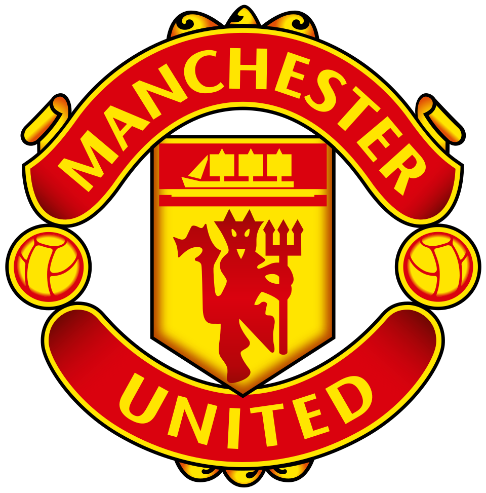
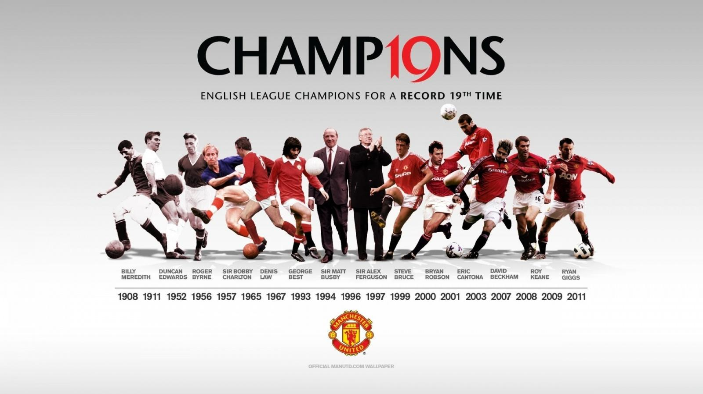
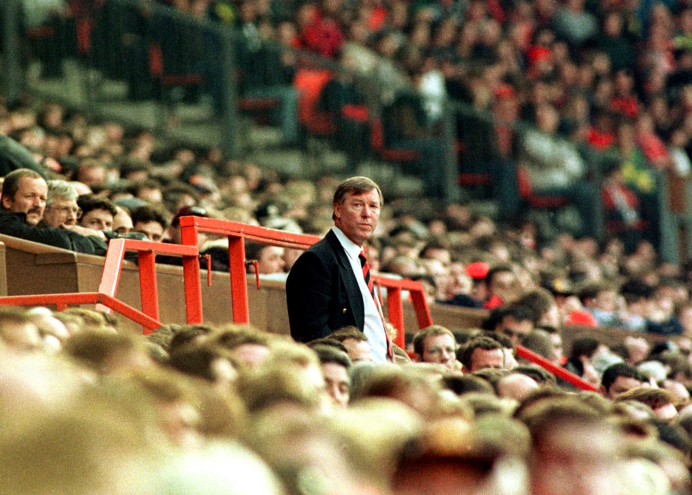
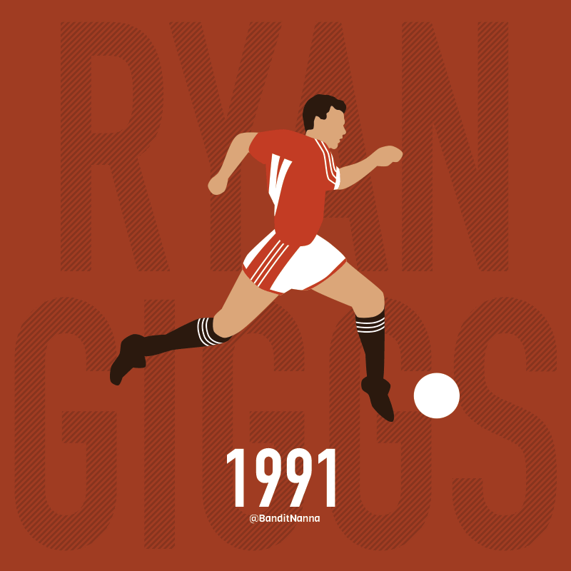
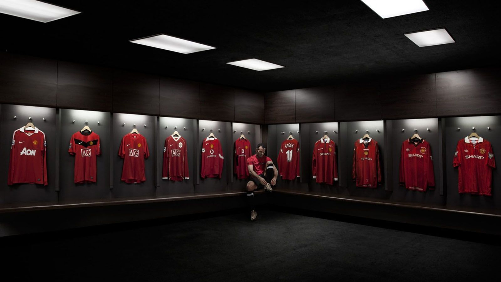

Born as Newton Heath
Railway workers formed a team that would grow into one of the biggest names in world football.

RED DEVILSTHE UNITED SUPPORTERSFrom the streets of Manchester to the farthest stands around the world: a story that began with football and lives on through loyalty.
Some clubs simply play the game. Others become part of who we are. United has been shaped by hard days, golden generations and nights the football world will never forget.
Railway workers formed a team that would grow into one of the biggest names in world football.
The club began a new chapter under its new name: Manchester United.
A home for big dreams, lasting memories and the unmistakable roar of the supporters.
A historic treble, sealed in dramatic fashion, in a season still written into football history.
Greatness is never a straight line. It is built in defiant comebacks, impossible nights and generations that refuse to stop believing.

A point at Ewood Park made United England's most decorated league champions at the time. Number 20 arrived two seasons later.

For 27 years, Sir Alex Ferguson shaped a team and a mentality that kept finding a way back to the top.

ANIMATION · @BANDITNANNAA fearless new generation brought fresh energy to United's story. The next chapter was already on the move.
Every trophy has a story: from the first league title to European nights that changed the game.
Explore the club's history ↗
Old Trafford is more than a place to play; it is the shared memory of generations of supporters. From the players' tunnel to the stands, every corner has a story to tell.
In Manchester, love for United passes from one generation to the next — like a red shirt that always fits the heart.